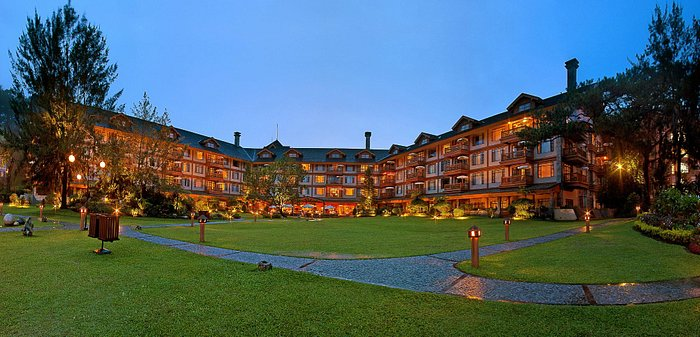

Visitor Information
📍 Location: Loakan Road, Baguio City
💰 Entrance Fee: Free
🕕 Best Time to Visit: Morning or late afternoon
Experience Adventure & Nature at Camp John Hay
Relax, dine, and explore the pine forest sanctuary of Baguio's historic leisure park.
About Camp John Hay
Camp John Hay is a historic leisure area in Baguio City known for its pine forests, gardens, cafes, hotels, and outdoor activities. Originally established as a rest and recreation facility for the U.S. military, it now features picnic areas, nature trails, the Eco Trail, Butterfly Sanctuary, The Manor hotel, and many dining spots.
Map Location
Popular Attractions & Nearby Spots
- 🌲 Picnic areas & nature trails
- ☕ The Manor & Forest Lodge hotels
- ☁️ Eco Trail & Butterfly Sanctuary
- 🧗 Treetop Adventure Park
- 🛍️ Ayala Technohub & food spots
- 🏌️ CJH Golf Course